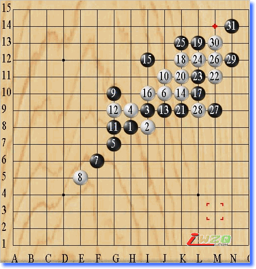
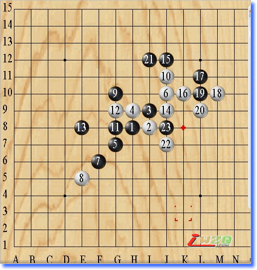

我竟然把花月下成了这样
#1 我竟然把花月下成了这样 作者：有志青年 发表时间：2008-1-8 14:38:17
举手进入五子游戏，看对方的分数在ID以上，所以首局执黑的我，便心虚的开了必胜局：花月。心想如果能砍成分分，我便也可以到ID了，正在美滋滋的做美梦呢，我一口气便把一三五七手连成了线，当我做棋把九手放到G10的时候，对方却把十手放到了J11的位置，怎么看，从内心感觉怎么别扭，想了办天，也不知道要把十一手放哪里了，最后还是放到了G8的位置活第一个三。结果，对方却只给了我一次进功的机会，便开始疯狂反功，没有招架之力，最后一个漂亮的四三让我举手投降了。
第二局，对方显然是让着我，第一手和第三手相距有好远，让我苦思幂想了办天，也无法为对方的开局取出名字来，可对方是真正的高手，这样最后还是让他赢了，碰到这样的高手，我是不会轻易让他走的，在第二局还没有结束的时候便对他说：“不许退的哈，我还要再下一局。”对方痛快的答应了下来。
最为精彩的要数第三局，我还是执黑，同样是花月开局，他还是把十手放到了J11的位置，结果这次他更加的得心应手，一共只用了二十几手，我便败下北来，步步奇招，让我丝毫没有了招架之力，只好跟着他的思维走。这局里我的黑好象有好多活三，但却没有任何机会让我把三给连起来，当总算有机会连三的时候，对方却做下了必杀之招。再次用一个漂亮的四三，轻松取胜。


（原文刊载于联众五子棋论坛）
#2 Re:我竟然把花月下成了这样 作者：游戏人间 发表时间：2008-1-8 15:24:56
第一盘13手E7强#3 Re:我竟然把花月下成了这样 作者：gerbo 发表时间：2008-1-8 19:22:55
 呵呵，对方只是考考你的定，这些都是必须要记住的，１１手Ｈ７，这是定．多记些定，对每个想提高的棋手都是必备的，能从失败中总结经验是可取的，祝每日都有新的提升．
呵呵，对方只是考考你的定，这些都是必须要记住的，１１手Ｈ７，这是定．多记些定，对每个想提高的棋手都是必备的，能从失败中总结经验是可取的，祝每日都有新的提升．
#4 Re:我竟然把花月下成了这样 作者：五子天下 发表时间：2008-2-13 16:22:37
原来是这样 定式~！~
#5 Re:我竟然把花月下成了这样 作者：qcyt 发表时间：2008-10-7 13:00:08
长剑阵
这个黑9是必败的嘛
#6 Re:我竟然把花月下成了这样 作者：朝聖者 发表时间：2008-10-24 3:52:43
我就经常玩花月老走不出来必胜 知道原因了
#7 Re:我竟然把花月下成了这样 作者：lijeki 发表时间：2008-10-30 12:22:43
13应该走F7#8 Re:我竟然把花月下成了这样 作者：golgyy 发表时间：2008-10-30 13:49:14
通常第一副图的话我的13手会放在F9
#9 Re:我竟然把花月下成了这样 作者：golgyy 发表时间：2008-10-30 13:51:33
第二副的那个13手没什么力度的，白必杀了的